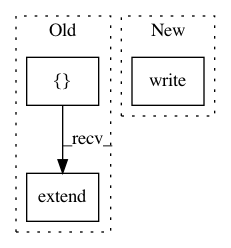

1f6029ab50cc842f274029c76337be29d4bb0967,src/python/pants/backend/jvm/tasks/javadoc_gen.py,JavadocGen,create_javadoc_command,#JavadocGen#Any#Any#,32
Before Change
jdk = DistributionLocator.cached(jdk=True)
tool_classpath = jdk.find_libs(["tools.jar"])
args = ["-quiet",
"-encoding", "UTF-8",
"-notimestamp",
"-use",
"-classpath", ":".join(classpath),
"-d", gendir]
// Always provide external linking for java API
offlinelinks = {"http://download.oracle.com/javase/6/docs/api/"}
def link(target):
for jar in target.jar_dependencies:
if jar.apidocs:
offlinelinks.add(jar.apidocs)
for target in targets:
target.walk(link, lambda t: t.is_jvm)
for link in offlinelinks:
args.extend(["-linkoffline", link, link])
args.extend(self.args)
args.extend(sources)
java_executor = SubprocessExecutor(jdk)
runner = java_executor.runner(jvm_options=self.jvm_options,
classpath=tool_classpath,
After Change
javadoc_classpath_file = os.path.join(self.workdir, "{}.classpath".format(os.path.basename(gendir)))
with open(javadoc_classpath_file, "w") as f:
f.write("-classpath ")
f.write(":".join(classpath))
args.extend(["@{}".format(javadoc_classpath_file)])
javadoc_sources_file = os.path.join(self.workdir, "{}.source.files".format(os.path.basename(gendir)))
with open(javadoc_sources_file, "w") as f:
In pattern: SUPERPATTERN
Frequency: 3
Non-data size: 3
Instances
Project Name: pantsbuild/pants
Commit Name: 1f6029ab50cc842f274029c76337be29d4bb0967
Time: 2017-09-11
Author: cheister@gmail.com
File Name: src/python/pants/backend/jvm/tasks/javadoc_gen.py
Class Name: JavadocGen
Method Name: create_javadoc_command
Project Name: tensorflow/models
Commit Name: c88fcb2bbb9cbb66c17eb891312bbe1cb250c384
Time: 2018-10-11
Author: shizhiw@google.com
File Name: official/recommendation/data_preprocessing.py
Class Name:
Method Name: instantiate_pipeline
Project Name: dmlc/gluon-nlp
Commit Name: 5ea0c27f524a3e684d9a2e6f012e30e6da2de8aa
Time: 2019-06-18
Author: linhaibin.eric@gmail.com
File Name: scripts/bert/finetune_classifier.py
Class Name:
Method Name: test